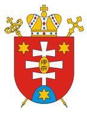

|
 |
 |

The Ruthenian Catholic ChurchThe motherland of Ruthenian Catholics is now in extreme western Ukraine southwest of the Carpathian mountains. The area was known variously in the past as Carpatho-Ukraine, Carpatho-Ruthenia, Carpatho-Russia, Subcarpathia, and now as Transcarpathia. Although the ecclesiastical term "Ruthenian: was formerly used more broadly to include Ukrainians, Belarusans and Slovaks as well, it is now used by church authorities in a narrower sense to denote this specific Greek Catholic Church. In terms of ethnicity, Ruthenian Catholics prefer to be called Rusyns. They are closely related to the Ukrainians and speak a dialect of the same language. The traditional Rusyn homeland extends beyond Transcarpathia into northeast Slovakia and the Lemko region of extreme southeast Poland.
In the late 9th century, most of this area came under the control of Catholic Hungary, which much later promoted Catholic missionary work among its Orthodox population, including the Rusyns. This activity culminated in the reception of 63 of their priests into the Catholic Church on April 24, 1646, at the town of Užhorod. The Union of Užhorod affected the Orthodox population of an area which roughly corresponds to today's eastern Slovakia. In 1664 a union took place at Mukačevo which involved the Orthodox in today's Transcarpathia in Ukraine and the Hungarian diocese of Hajdúdorog. A third union, which affected the Orthodox in today's county of Maramures in Romania to the east of Mukačevo, took place in about 1713. Thus within 100 years after the 1646 Union of Užhorod, the Orthodox Church virtually ceased to exist in the region.
Early on there were jurisdictional conflicts over who would control the Ruthenian Catholic Church in this area. In spite of the desire of the Ruthenian Catholics to have their own ecclesiastical organization, for more than a century the Ruthenian bishop of Mukačevo was only the ritual vicar of the Latin bishop of Eger, and Ruthenian priests served as assistants in Latin parishes. The dispute was resolved in 1771 by Pope Clement XIV who, at the request of Empress Maria-Theresa, erected the Ruthenian eparchy of Mukačevo and made it a suffragan of the Primate of Hungary. A seminary for Ruthenian Catholics was set up at Užhorod in 1778.
After World War I, Transcarpathia became part of the new republic of Czechoslovakia. There were Byzantine Catholic dioceses at Mukačevo and Prešov. Although in the 1920s a group of these Ruthenian Catholics returned to the Orthodox Church [see Orthodox Church in the Czech and Slovak Republics], Rusyn ethnic identity remained closely tied to the Ruthenian Catholic Church.
At the end of World War II, Transcarpathia, including Užhorod and Mukačevo, was annexed to the Soviet Union as part of the Ukrainian Soviet Socialist Republic. Prešov, however, remained in Czechoslovakia [see Slovak Catholic Church]. The Soviet authorities soon initiated a vicious persecution of the Ruthenian Church in the newly acquired region. In 1946 the Užhorod seminary was closed, and in 1947 Bishop Theodore Romža of Mukačevo was poisoned by the communist authorities. In 1949 the Ruthenian Catholic Church was officially integrated into the Russian Orthodox Church. Rusyns on the other side of the Czechoslovak border were also forced to become Orthodox, while those in the Polish Lemko region were deported en masse in 1947 either to the Soviet Union or other parts of Poland. In all three countries, an attempt was made to wipe out any residual Rusyn national identity by declaring them all to be Orthodox and Ukrainian.
The collapse of communism throughout the region had a dramatic effect on Ruthenian Catholics. The first changes took place in Poland in the mid-1980s, where Lemko organizations began to surface and press for recognition of their rights and distinct status. In Czechoslovakia, the much-diminished Rusyn minority began in November 1989 to press for recognition within the predominantly Slovak Greek Catholic diocese of Prešov. And finally, in the Transcarpathian heartland, on January 16, 1991, the Holy See confirmed a bishop and two auxiliaries that had been functioning underground for the Ruthenian Catholic eparchy of Mukačevo. By 2006 the eparchy had 370 parishes served by 217 priests. Soon after the end of communist rule, the diocese was able to establish the Theodore Romža Theological Academy in Užhorod for the formation of clergy and laity.
A continuing issue for Ruthenian Catholics has been their relationship with the much larger Ukrainian Greek Catholic Church. For the first time ever, the Mukačevo diocese finds itself functioning freely in the same country with the Ukrainian Catholic Church. Although it is not officially a part of the Ukrainian church and is still immediately subject to the Holy See, its bishops have attended recent Ukrainian Greek Catholic synods. The bishop of Mukačevo has made it clear, however, that he opposes integration into the Ukrainian Catholic Church and favors the promotion of the distinct ethnic and religious identity of his Rusyn people. This identity received a boost in March 2007 when the Transcarpathian Oblast Council voted to recognize the Rusyn people as an indigenous nationality of the region. As a result, the local government will be required to provide funding to promote Rusyn language, culture, and education.
In 1996 Pope John Paul II established an Apostolic Exarchate for Catholics of the Byzantine rite in the Czech Republic and appointed Fr. Ivan Ljavinec, until then the syncellus of the Prešov Slovak Catholic diocese, as its first bishop. One reason for the establishment of this jurisdiction – which was officially classified as belonging to the Ruthenian rite – was to regularize the situation of married Latin priests secretly ordained in Czechoslovakia under communist rule. Sixty of these priests had been accepted by the church but had been allowed to minister only as permanent deacons in the Latin rite because of their marriages. In 1997, 18 of these men were re-ordained Greek Catholic priests by Bishop Ljavinec. There are about 178,000 Greek Catholics in the Czech Republic.
Many Ruthenian Catholics immigrated to North America in the late 19th and early 20th centuries. Because of strained relations with the Latin hierarchy and the imposition of clerical celibacy on the Eastern Catholic clergy in the United States in 1929, large numbers of these Catholics returned to the Orthodox Church. In 1982 it was estimated that out of 690,000 people of Rusyn descent in the United States, 225,000 were still Ruthenian Catholics, 95,000 belonged to the Carpatho-Russian Orthodox diocese, 250,000 were in the Orthodox Church in America, 20,000 were in Orthodox parishes directly under the Moscow Patriarchate, and 100,000 belonged to various other Orthodox, Ukrainian Catholic, Roman Catholic, and Protestant denominations.
In the United States today, the Ruthenians constitute a separate ecclesiastical structure with four dioceses, 222 parishes, 231 priests, 50 permanent deacons, and about 100,000 faithful. It is headed by Most Reverend William Charles Skurla (born 1956, appointed 2012), Metropolitan Archbishop of Pittsburgh (66 Riverview Avenue, Pittsburg, PA 15214). The official website of the Archeparchy is http://www.archeparchy.org/. This church, generally known simply as Byzantine Catholic, emphasizes its American character, and celebrates liturgy in English in most parishes. Candidates for the priesthood are trained at Sts. Cyril and Methodius Seminary in Pittsburgh. In 1999 the Vatican approved a new particular law for the Ruthenian Metropolitanate which allowed for the ordination to the priesthood of married men who had received a proper dispensation from the Holy See.
In other areas of the diaspora, including Australia, Great Britain, and Canada, Ruthenian Catholics are not distinguished from Ukrainian Catholics.
In sum, today there are three distinct Ruthenian Catholic jurisdictions: (1) the Ruthenian Byzantine Catholic Metropolitanate in the United States, a metropolitan church sui iuris, (2) the eparchy of Mukačevo in Ukraine, which is immediately subject to the Holy See, and (3) the Apostolic Exarchate in the Czech Republic. The relationship between the three has not been clarified. The bishop of Mukačevo is listed below as head of the church, but he has no authority over the other two jurisdictions. The membership figure includes the combined statistics for all three entities.
Location: Ukraine, United States, Czech Republic
Head: Bishop Milan Šašík (born 1952, appointed 2010)
Title: Bishop of Mukačevo of the Byzantines
Residence: Užhorod, Ukraine
Membership: 598,000
Website: www.mgce.uz.ua
Last Modified: 30 Mar 2012